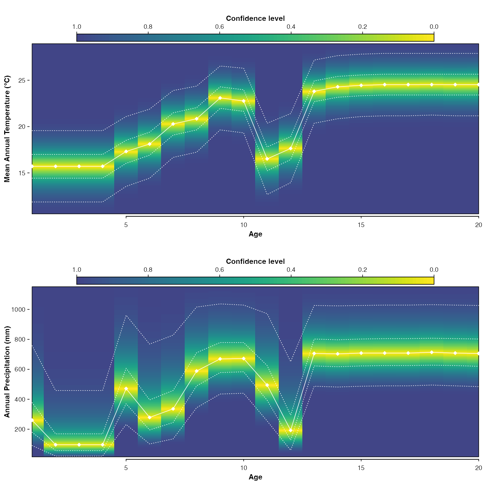

Runs all the different steps of a CREST reconstruction in one function.
crest( df, pse, taxaType, climate, site_info = rep(NA, length(climate)), site_name = NA, xmn = -180, xmx = 180, ymn = -90, ymx = 90, continents = NA, countries = NA, realms = NA, biomes = NA, ecoregions = NA, minGridCells = 20, selectedTaxa = NA, bin_width = rep(1, length(x$parameters$climate)), shape = rep("normal", length(x$parameters$climate)), npoints = 500, geoWeighting = TRUE, climateSpaceWeighting = TRUE, presenceThreshold = 0, taxWeight = "normalisation", uncertainties = c(0.5, 0.95), leave_one_out = FALSE, verbose = TRUE, dbname = "gbif4crest_02" )
| df | A data frame containing the data to reconstruct (counts, percentages or presence/absence data). |
|---|---|
| pse | A pollen-Species equivalency table. See |
| taxaType | A numerical index (between 1 and 6) to define the type of palaeoproxy used: 1 for plants, 2 for beetles, 3 for chironomids, 4 for foraminifers, 5 for diatoms and 6 for rodents. The example dataset uses taxaType=0 (pseudo-data). Default is 1. |
| climate | A vector of the climate variables to extract. See
|
| site_info | A vector containing the coordinates of the study site.
Default |
| site_name | The name of the dataset (default |
| xmn | The coordinates defining the study area. |
| xmx | The coordinates defining the study area. |
| ymn | The coordinates defining the study area. |
| ymx | The coordinates defining the study area. |
| continents | A vector of the continent names defining the study area. |
| countries | A vector of the country names defining the study area. |
| realms | A vector of the studied botanical realms defining the study area. |
| biomes | A vector of the studied botanical biomes defining the study area. |
| ecoregions | A vector of the studied botanical ecoregions defining the study area. |
| minGridCells | The minimum number of unique presence data necessary to estimate a species' climate response. Default is 20. |
| selectedTaxa | A data frame assigns which taxa should be used for each variable (1 if the taxon should be used, 0 otherwise). The colnames should be the climate variables' names and the rownames the taxa names. Default is 1 for all taxa and all variables. |
| bin_width | The width of the bins used to correct for unbalanced climate state. Use values that split the studied climate gradient in 15-25 classes (e.g. 2°C for temperature variables). Default is 1. |
| shape | The imposed shape of the species |
| npoints | The number of points to be used to fit the |
| geoWeighting | A boolean to indicate if the species should be weighting by the squareroot of their extension when estimating a genus/family level taxon-climate relationships. |
| climateSpaceWeighting | A boolean to indicate if the species |
| presenceThreshold | All values above that threshold will be used in the reconstruction (e.g. if set at 1, all percentages below 1 will be set to 0 and the associated presences discarded). Default is 0. |
| taxWeight | One value among the following: 'originalData', 'presence/absence', 'percentages' or 'normalisation' (default). |
| uncertainties | A (vector of) threshold value(s) indicating the error bars that should be calculated (default both 50 and 95% ranges). |
| leave_one_out | A boolean to indicate whether the leave one out (loo)
reconstructions should be computed (default |
| verbose | A boolean to print non-essential comments on the terminal
(default |
| dbname | The name of the database. Default is |
A crestObj containing the reconstructions.
data(crest_ex) data(crest_ex_pse) data(crest_ex_selection) recons <- crest( df = crest_ex, pse = crest_ex_pse, taxaType = 0, site_info = c(7.5, 7.5), site_name = 'crest_example', climate = c("bio1", "bio12"), bin_width = c(2, 20), shape = c("normal", "lognormal"), selectedTaxa = crest_ex_selection, dbname = "crest_example", leave_one_out = TRUE )#> #> ## Prepping data for database extraction #> <> Checking pse .......................... [OK] #> <> Checking climate variables ............ [OK] #> <> Checking taxaType ..................... [OK] #> <> Checking coordinates .................. [OK] #> <> Checking continent and country names .. [OK] #> <> Checking/Defining selectedTaxa ........ [OK] #> <> Checking the pse table ................ [OK] #> <> Extracting taxon species .............. <> Extracting taxon species .............. 14% <> Extracting taxon species .............. 29% <> Extracting taxon species .............. 43% <> Extracting taxon species .............. 57% <> Extracting taxon species .............. 71% <> Extracting taxon species .............. 86% <> Extracting taxon species .............. 100% <> Extracting taxon species .............. [OK] #> <> Extracting species distributions ...... <> Extracting species distributions ...... 14% <> Extracting species distributions ...... 29% <> Extracting species distributions ...... 43% <> Extracting species distributions ...... 57% <> Extracting species distributions ...... 71% <> Extracting species distributions ...... 86% <> Extracting species distributions ...... [OK] #> <> Extracting climate space .............. [OK] #> ## Data extraction completed. #> #> ## Calibration of the taxon-climate relationships #> <> Preparing data ........................ [OK] #> <> Calibrating climate space ............. [OK] #> <> Fitting relationships ................. <> Fitting relationships ................. 17% <> Fitting relationships ................. 33% <> Fitting relationships ................. 50% <> Fitting relationships ................. 67% <> Fitting relationships ................. 83% <> Fitting relationships ................. 100% <> Fitting relationships ................. [OK] #> ## Taxa-climate relationships fitted. #> #> ## Last data checks and reconstruction #> <> Checking data ......................... [OK] #> <> Checking taxa ......................... [OK] #> <> Defining taxa weights ................. [OK] #> <> Reconstructing ........................ <> Reconstructing ........................ 2% <> Reconstructing ........................ 5% <> Reconstructing ........................ 8% <> Reconstructing ........................ 10% <> Reconstructing ........................ 12% <> Reconstructing ........................ 15% <> Reconstructing ........................ 18% <> Reconstructing ........................ 20% <> Reconstructing ........................ 22% <> Reconstructing ........................ 25% <> Reconstructing ........................ 28% <> Reconstructing ........................ 30% <> Reconstructing ........................ 32% <> Reconstructing ........................ 35% <> Reconstructing ........................ 38% <> Reconstructing ........................ 40% <> Reconstructing ........................ 42% <> Reconstructing ........................ 45% <> Reconstructing ........................ 48% <> Reconstructing ........................ 50% <> Reconstructing ........................ 52% <> Reconstructing ........................ 55% <> Reconstructing ........................ 58% <> Reconstructing ........................ 60% <> Reconstructing ........................ 62% <> Reconstructing ........................ 65% <> Reconstructing ........................ 68% <> Reconstructing ........................ 70% <> Reconstructing ........................ 72% <> Reconstructing ........................ 75% <> Reconstructing ........................ 78% <> Reconstructing ........................ 80% <> Reconstructing ........................ 82% <> Reconstructing ........................ 85% <> Reconstructing ........................ 88% <> Reconstructing ........................ 90% <> Reconstructing ........................ 92% <> Reconstructing ........................ 95% <> Reconstructing ........................ 98% <> Reconstructing ........................ 100% <> Reconstructing ........................ [OK] #> ## Reconstruction completed in 0min 0.04s. #> #> #> ## Prepping data for LOO reconstructions #> <> Checking data ......................... [OK] #> <> Checking taxa ................... ......[OK] #> *i Estimated time for the LOO reconstructions: 0min 0.19s. #> <> LOO reconstructions ................... 0% <> LOO reconstructions ................... 20% <> LOO reconstructions ................... 40% <> LOO reconstructions ................... 60% <> LOO reconstructions ................... 80% <> LOO reconstructions ................... 100% <> LOO reconstructions ................... [OK] #> ## LOO reconstruction completed in 0min 0.44s. #>